Atlanta Travel Guide
Major transportation and media hub distinguished by civil rights landmarks, a vast urban tree canopy, a thriving film scene, and one of the world’s busiest airports.


-400.jpg)

{kind=link}
Places to See in Atlanta
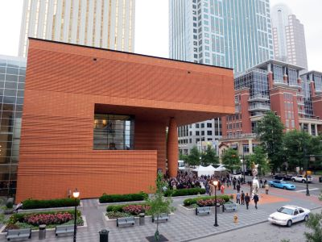
Danksergeant15, CC BY-SA 4.0, via Wikimedia Commons; Image Size Adjusted
{kind=link}
APEX Museum
Museum dedicated to African-American history and culture, featuring exhibits on slavery, civil rights, and Black innovation in a historic downtown district.
Danksergeant15, CC BY-SA 4.0, via Wikimedia Commons; Image Size Adjusted
Atlanta Beltline
Multi-use trail and cultural corridor connecting neighborhoods with art, parks, and local businesses.
Danksergeant15, CC BY-SA 4.0, via Wikimedia Commons; Image Size Adjusted
Atlanta Beltline Eastside Trail
Popular segment of the Beltline featuring art, green space, and access to shops and restaurants.
Atlanta Botanical Garden
Expansive urban garden featuring themed plant collections, seasonal exhibits, and immersive nature experiences for all ages.
Atlanta Contemporary
Contemporary art venue showcasing emerging and established artists through rotating exhibitions and public programs.
Atlanta History Center
Expansive cultural campus featuring historic homes, exhibitions, gardens, and immersive experiences that chronicle the diverse history of the American South.
Danksergeant15, CC BY-SA 4.0, via Wikimedia Commons; Image Size Adjusted
Atlantic Station
Mixed-use development featuring shopping, dining, entertainment, and seasonal events in a walkable district with modern urban design.
Birth Home of Martin Luther King Jr.
Restored early 20th-century home offering ranger-led presentations on the formative years of a civil rights leader.
Breman Museum and Cultural Center
Interactive cultural center preserving Jewish heritage through exhibitions, archives, and Holocaust education programs.
Centennial Olympic Park
Downtown greenspace and legacy site of the 1996 Olympics featuring interactive fountains, public art, and seasonal events surrounded by major attractions.
Centers for Disease Control and Prevention
Federal public health agency campus housing research labs, administrative offices, and a museum dedicated to disease prevention and global health education.
College Football Hall of Fame
Interactive museum celebrating college football history with immersive exhibits, memorabilia, and a 45-yard indoor playing field.
Danksergeant15, CC BY-SA 4.0, via Wikimedia Commons; Image Size Adjusted
Computer Museum of America
Technology-focused museum offering hands-on exhibits and rare artifacts that trace the evolution of computing from early machines to modern innovations.
Danksergeant15, CC BY-SA 4.0, via Wikimedia Commons; Image Size Adjusted
David J. Sencer CDC Museum
Public health museum featuring interactive exhibits on disease prevention, epidemiology, and the history of the Centers for Disease Control and Prevention.
Delta Flight Museum
Interactive museum chronicling the history of Delta Air Lines with aircraft displays, aviation artifacts, and immersive exhibits in a restored 1940s hangar.
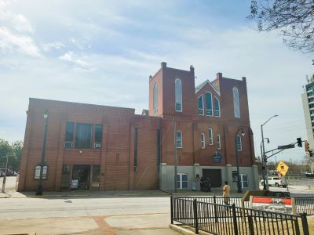
DXR, CC BY-SA 4.0, via Wikimedia Commons; Image Size Adjusted
{kind=link}
Ebenezer Baptist Church
Historic church known for its role in the civil rights movement and as the spiritual home of Dr. Martin Luther King Jr.
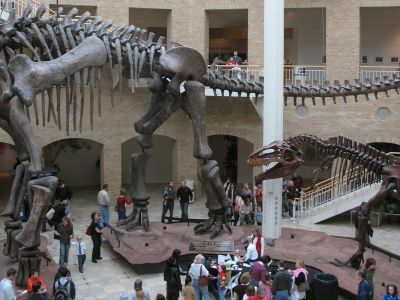
Britt Reints from Pittsburgh, PA, CC BY 2.0, via Wikimedia Commons; Image Size Adjusted
{kind=link}
Fernbank Museum of Natural History
Natural history museum offering immersive exhibits on dinosaurs, ecosystems, and global cultures, plus a giant screen theater and outdoor forest trails.
Danksergeant15, CC BY-SA 4.0, via Wikimedia Commons; Image Size Adjusted
Fernbank Science Center
Educational science facility featuring a planetarium, observatory, and interactive exhibits focused on astronomy, biology, and earth sciences.
Danksergeant15, CC BY-SA 4.0, via Wikimedia Commons; Image Size Adjusted
Fox Theatre
Lavishly restored historic theater hosting Broadway shows, concerts, and tours in a Moorish Revival setting with a starry ceiling and grand organ.
Danksergeant15, CC BY-SA 4.0, via Wikimedia Commons; Image Size Adjusted
Freedom Park
Expansive urban greenspace offering trails, art installations, and community events in a natural setting.
Georgia Aquarium
Expansive marine life attraction featuring thousands of aquatic species, immersive exhibits, and interactive experiences.
Georgia State Capitol
Architecturally grand government building featuring a gold dome, historic exhibits, and legislative chambers open for public tours on weekdays.
Danksergeant15, CC BY-SA 4.0, via Wikimedia Commons; Image Size Adjusted
Grant Park
Historic urban park offering walking trails, sports facilities, picnic areas, and seasonal events in a lush, tree-lined setting.
High Museum of Art
Modern art museum featuring a diverse collection of American, European, African, and contemporary works alongside rotating exhibitions and educational programs.
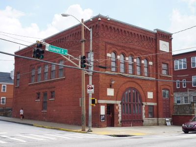
Minipaula, CC BY-SA 3.0, via Wikimedia Commons; Image Size Adjusted
{kind=link}
Historic Fire Station 6
Historic firehouse museum showcasing Atlanta’s firefighting history and the desegregation of the city’s fire department.
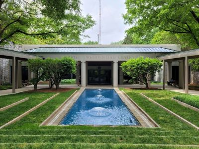
Minipaula, CC BY-SA 3.0, via Wikimedia Commons; Image Size Adjusted
Jimmy Carter Presidential Library and Museum
Presidential library and museum chronicling the life, career, and humanitarian work of Jimmy Carter through exhibits, archives, and gardens.
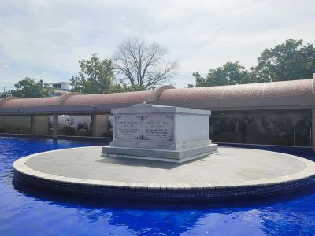
Minipaula, CC BY-SA 3.0, via Wikimedia Commons; Image Size Adjusted
King Center
Memorial and educational campus honoring the legacy of Dr. Martin Luther King Jr. through exhibits, monuments, and community programs.
Danksergeant15, CC BY-SA 4.0, via Wikimedia Commons; Image Size Adjusted
Krog Street Market
Bustling food hall and shopping destination housed in a renovated warehouse offering diverse eateries and local boutiques.
Danksergeant15, CC BY-SA 4.0, via Wikimedia Commons; Image Size Adjusted
Krog Street Tunnel
Public pedestrian and vehicle tunnel known for its ever-changing graffiti art and cultural expression connecting Inman Park and Cabbagetown.
Danksergeant15, CC BY-SA 4.0, via Wikimedia Commons; Image Size Adjusted
Little Five Points
Bohemian neighborhood known for its alternative culture, vintage shops, street art, and eclectic dining and nightlife.
Danksergeant15, CC BY-SA 4.0, via Wikimedia Commons; Image Size Adjusted
Lullwater Preserve
Wooded nature preserve with scenic trails, a lake, and historic ruins offering a peaceful retreat for walking, running, and wildlife observation.
Danksergeant15, CC BY-SA 4.0, via Wikimedia Commons; Image Size Adjusted
Madea's House
Residential filming location featured prominently in Tyler Perry’s Madea film series, known for its iconic porch scenes and Southern charm.
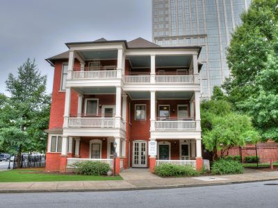
Minipaula, CC BY-SA 3.0, via Wikimedia Commons; Image Size Adjusted
Margaret Mitchell House
Historic Tudor Revival apartment where the author of *Gone with the Wind* lived and wrote, now a museum with exhibits on her life and legacy.
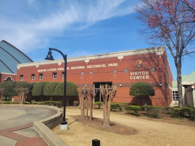
Minipaula, CC BY-SA 3.0, via Wikimedia Commons; Image Size Adjusted
Martin Luther King Jr. National Historical Park
Historic site preserving the legacy of Dr. Martin Luther King Jr. through exhibits, landmarks, and educational programs.
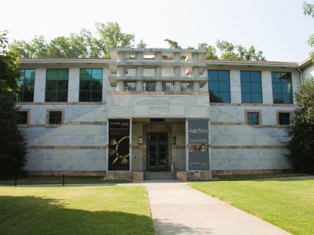
Minipaula, CC BY-SA 3.0, via Wikimedia Commons; Image Size Adjusted
Michael C. Carlos Museum
University museum featuring a diverse collection of ancient artifacts and art from Egypt, Greece, Rome, the Near East, and the Americas.
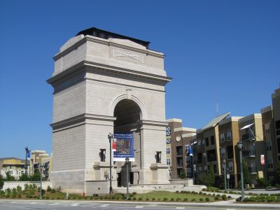
Minipaula, CC BY-SA 3.0, via Wikimedia Commons; Image Size Adjusted
Millennium Gate Museum
Neoclassical arch monument housing exhibits on Georgia history, culture, and architecture.
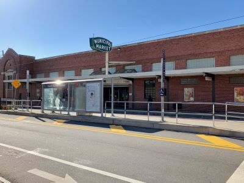
Minipaula, CC BY-SA 3.0, via Wikimedia Commons; Image Size Adjusted
Municipal Market
Indoor public market offering a diverse mix of fresh produce, meats, baked goods, and international cuisine from local vendors in a historic setting.
Danksergeant15, CC BY-SA 4.0, via Wikimedia Commons; Image Size Adjusted
Museum of Contemporary Art of Georgia
Gallery housing contemporary works by Georgia artists in a minimalist setting with rotating exhibitions and educational programs.
Danksergeant15, CC BY-SA 4.0, via Wikimedia Commons; Image Size Adjusted
Museum of Design Atlanta (MODA)
Contemporary design museum offering rotating exhibitions and educational programs that explore the impact of design on everyday life.
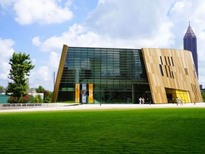
Minipaula, CC BY-SA 3.0, via Wikimedia Commons; Image Size Adjusted
National Center for Civil and Human Rights
Immersive museum exploring the American civil rights movement and global human rights struggles through interactive exhibits and historical artifacts.
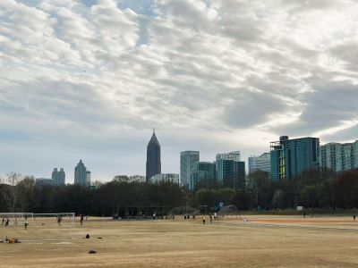
Minipaula, CC BY-SA 3.0, via Wikimedia Commons; Image Size Adjusted
Piedmont Park
Expansive urban park offering scenic trails, sports fields, a dog park, and year-round events in a lush green setting with skyline views.
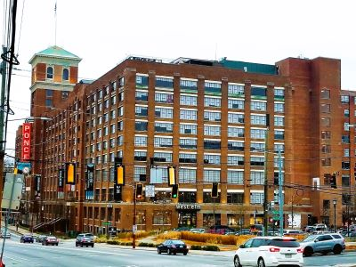
Minipaula, CC BY-SA 3.0, via Wikimedia Commons; Image Size Adjusted
Ponce City Market
Historic multi-use complex featuring a vibrant mix of shopping, dining, residential, and office spaces within a restored early 20th-century building.
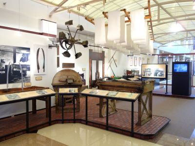
Minipaula, CC BY-SA 3.0, via Wikimedia Commons; Image Size Adjusted
Robert C. Williams Museum of Papermaking
Specialized museum showcasing the history, science, and art of papermaking through rare artifacts, tools, and rotating exhibitions.
Danksergeant15, CC BY-SA 4.0, via Wikimedia Commons; Image Size Adjusted
SCAD FASH Museum of Fashion + Film
Contemporary exhibition space dedicated to exploring the intersections of fashion and film through rotating displays, educational programming, and curated cinematic experiences.
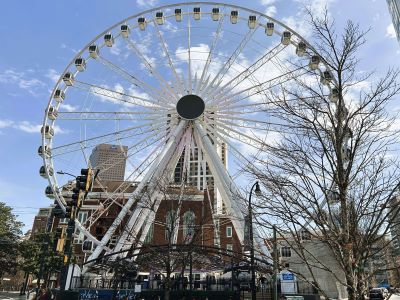
Minipaula, CC BY-SA 3.0, via Wikimedia Commons; Image Size Adjusted
Skyview Atlanta
Towering Ferris wheel offering panoramic views of the city skyline from climate-controlled gondolas in a lively downtown setting.
Danksergeant15, CC BY-SA 4.0, via Wikimedia Commons; Image Size Adjusted
Spelman College Museum of Fine Art
Gallery showcasing works by women of the African Diaspora through exhibitions, lectures, and educational programs.
Danksergeant15, CC BY-SA 4.0, via Wikimedia Commons; Image Size Adjusted
Westside Park
Expansive urban greenspace featuring ADA-accessible trails, playgrounds, pavilions, and panoramic views of a former quarry turned reservoir.
Danksergeant15, CC BY-SA 4.0, via Wikimedia Commons; Image Size Adjusted
Woodruff Park
Urban greenspace in the heart of downtown featuring public art, fountains, a playground, and community events across six landscaped acres.
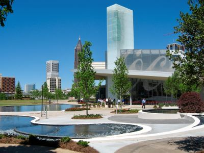
Minipaula, CC BY-SA 3.0, via Wikimedia Commons; Image Size Adjusted
World of Coca-Cola
Interactive museum experience featuring exhibits on the history, culture, and global impact of the Coca-Cola brand.
Danksergeant15, CC BY-SA 4.0, via Wikimedia Commons; Image Size Adjusted
Zoo Atlanta
Accredited zoological park featuring over 1,000 animals from around the world, interactive exhibits, and conservation-focused educational programs.
Overview
Atlanta is the capital and largest city of Georgia, set in the rolling Piedmont foothills of the northwest part of the state. A major business, media, and transportation hub, it is home to Hartsfield-Jackson International Airport, one of the busiest in the world, and to Coca-Cola and CNN. Visitors come for its civil rights heritage as the hometown of Dr. Martin Luther King Jr., for world-class family attractions and museums, and for a big food, music, and sports scene.
Founded in 1837 as a railroad terminus and named Atlanta in 1845, the city was burned during the Civil War in 1864 and rebuilt, which is why a phoenix appears on its seal. It became the center of the civil rights movement in the 1950s and 1960s and hosted the 1996 Summer Olympics.
The Martin Luther King Jr. National Historical Park anchors Sweet Auburn, with the Birth Home, Ebenezer Baptist Church, the King Center, and the National Center for Civil and Human Rights. Downtown, the Georgia Aquarium, World of Coca-Cola, Centennial Olympic Park, and SkyView are within walking distance of each other. Museums include the High Museum of Art, the Atlanta History Center, the Fernbank Museum, and the Jimmy Carter Library and Museum. For green space, try Piedmont Park, the Atlanta BeltLine, and the Atlanta Botanical Garden, and stop at Ponce City Market for food.
Atlanta's dining spans Southern classics to the global flavors along Buford Highway and in Westside food halls. The city is a hub for hip-hop and R&B, and the Fox Theatre is a landmark venue. A booming film and television industry has earned it the nickname "Hollywood of the South."
Atlanta has teams in every major league: the Atlanta Braves (MLB), Atlanta Falcons (NFL), Atlanta Hawks (NBA), Atlanta United FC (MLS), and the Atlanta Dream (WNBA). Georgia Tech's Yellow Jackets play in the city, and Mercedes-Benz Stadium hosts the SEC Championship Game and the Peach Bowl.
This article uses material from the Wikipedia articles and official tourism pages for the Atlanta, which are released under the Creative Commons Attribution-Share-Alike License 3.0.
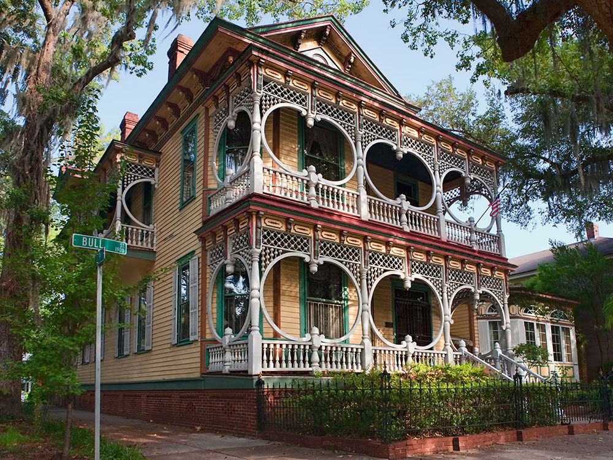
{kind=link}